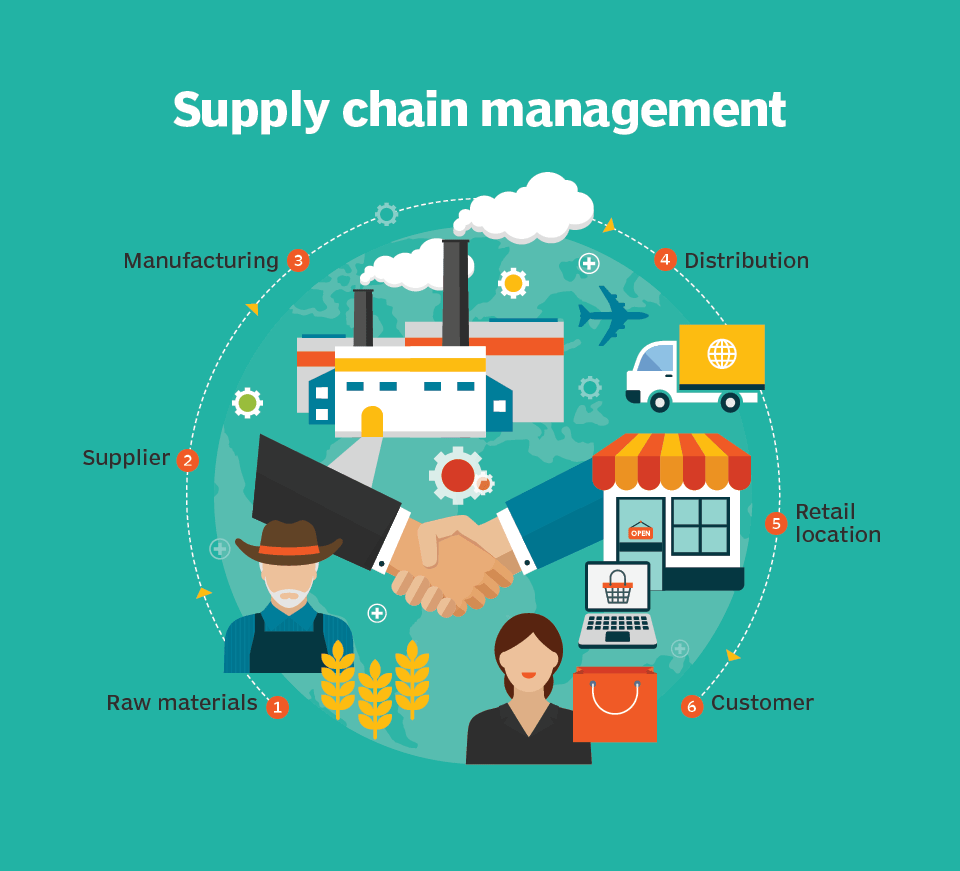

Since the start of the current century, the world has experienced uncertainties as a result of climate change, security threats and the digital industrial era technological revolution. These uncertainties create risks, which result in catastrophic accidents. Systematic research on supply chain resilience and sustainability (e.g. adaptation to climate change) began a few years ago, but the incorporation of risk models and uncertainty methods into the research appear to be scanty with only a limited number of studies in the relevant literature. Furthermore, there is little evidence to show that previous work used quantitative risk analysis and economic evaluation to support rational supply chain resilience and sustainability design and planning, although the necessity and benefits were recognised. There are research challenges that have theoretical implications that are not being dealt with holistically in current literature and cannot be solved easily without developing new risk schemes and exchanging knowledge between the domains of climate adaptation, security and safety across the different CSC segments (e.g. road, rail and sea).
Firstly, adaptation to climate change and its impacts is a fundamental and unavoidable issue in our society today. 
Secondly, a series of terrorist attacks, an increasing number of container cargo thefts and cyber threats associated with CSCs in the past years have brought the issue of CSC security and vulnerability into sharp focus and have posed a new challenge to devise sound procedures to increase system resilience.
Thirdly, safety risk estimation and failure prevention of a component (incl. both machinery and human elements) is routinely performed to ensure the CSC system is in a good and safe condition.
TRUST is to develop a novel integrated CSC resilience and sustainability enhancement methodology, aimed at addressing the risks and uncertainties caused by the longlasting changes in operational, environmental, economic, technical and managerial practices in different segments of CSCs. It will help develop a world-leading research team with a wide variety of skills in climate change, sustainability science, safety and security studies, economic modelling, data management and decision making to create an interdisciplinary subject for CSC resilience and sustainability research. The methodology is designed to encourage the transfer of ideas, experimental techniques, models and technological and scientific insights both within the climate adaptation and risk modelling research communities and with the appropriate interfaces between economic, management and engineering groups.